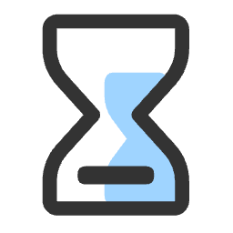
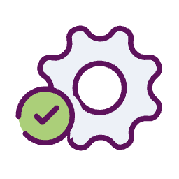

☰
LOCALETOOL
icCheckTool
txtnowrap
formatUrl
nbspAdd
codeDiff
standby
DM-QA
GET
compressCode
标题
暂无
暂无
设置
显示下班倒计时
主题切换
默认主题
深邃夜空
清新森林
优雅紫罗
海洋之心
晚霞橘暮
樱花粉韵
薄荷清晨
科技蓝调
咖啡时光
工具说明

距离下班还有

00:00:00
工作时间设置
×
上班时间
午休开始时间
午休结束时间
下班时间
当前时间表
上班时间:
09:30
午休时间:
12:00 - 14:00
下班时间:
18:30